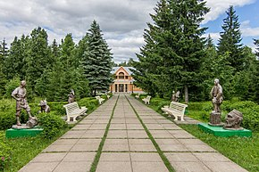

А́рский райо́н (тат. Арча районы) —
административно-территориальная единица и
муниципальное образование (муниципальный
район) в составе Республики Татарстан
Российской Федерации. Находится на
севере республики. Административный центр
— город Арск.
Население
На 2020 год в районе проживает
51 291 человек.
Согласно итогам Всероссийской переписи
населения 2020 года (из числа указавших
национальность), татары составляют 91,3%
населения района, русские — 6,7%.